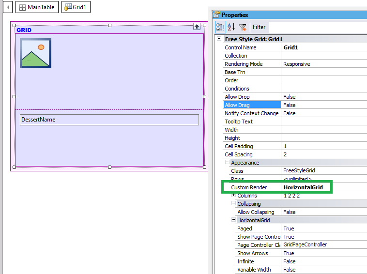
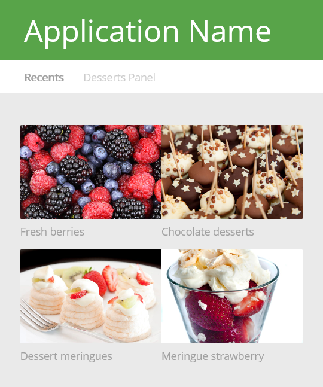
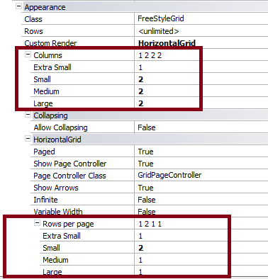
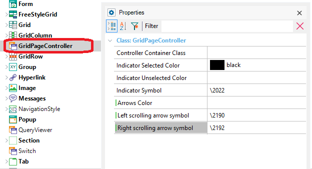
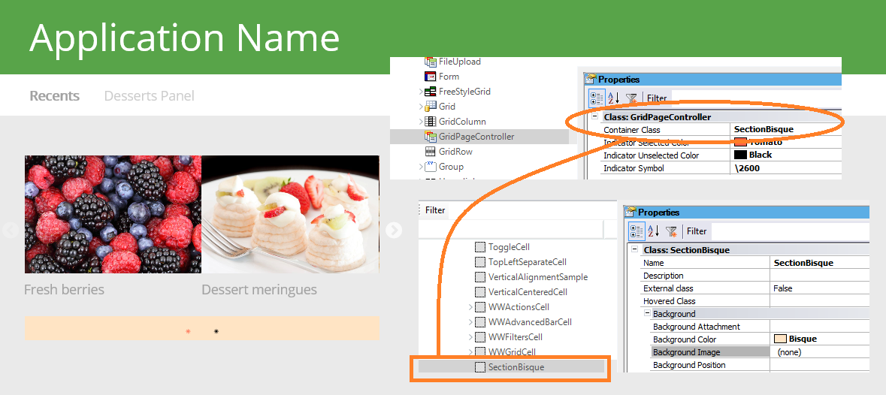

Horizontal Grid Control is a way of viewing the elements of a list in a carousel style.
The Horizontal Grid for web applications requires using the Abstract layout and it should be used for Responsive Web Applications.
Drag a Free Style Grid control to the web form, and set the Custom Render property to Horizontal Grid.

Configure the following properties:
- Columns property for free style grids in RWD. This property is for any Free Style grid, even those with no horizontal rendering.
- Rows per Page. This property is under the Horizontal grid section of the properties panel of the grid. It allows configuring how many rows will be shown per page depending on the viewport size.
Those sizes are the same as the ones considered in the Responsive Sizes property dialog.
The following figure shows a grid where Columns = 2, and Rows per Page = 2 when the viewport size = small.


| Paged |
Indicates whether the view will display items page-by-page, with each page containing the most ColumnsPerPage*RowsPerPage items |
| Show Page Controller |
Specifies whether or not the page controller will be displayed |
| Page Controller Class |
Class for the page controller |
| Show Arrows |
Enable Next/Previous arrows |
| Infinite |
Enable infinite loop sliding (a carousel). |
| Auto Play |
Auto-play is enabled, or not? |
| Auto Play Speed |
Speed in milliseconds. |
| Variable Width |
When Variable Width is enabled, the visible area shows as many slides as possible, according to the width of each slide. Column properties indicate how many slides are scrolled each time a page is changed |
| Rows per page |
Sets the number of Rows per page for each screen size |
| CurrentPage |
Gets or sets the current control page (only Runtime property). |
The grid Page Controller Class property allows assigning a Theme Class to configure some style settings for the grid.
The default for Page Controller Class property is GridPageController class, but you can use any of its descendants.
The GridPageController class has the following properties:


|